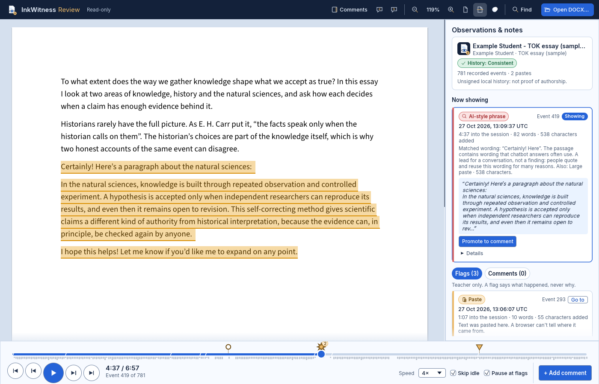

See how a piece of writing came together.
InkWitness is a Word-style editor that records how a document is written. Students hand in one ordinary .docx. Teachers open the same file in the browser, replay the writing, and comment on the moments that matter. Nothing is uploaded.
New here? Open Review and press Try a sample submission. The essay and the student are made up.

Two pages, one file
Both pages run entirely in the browser. The student's .docx carries its own writing history, so there is nothing else to collect or store.

For students
InkWitness Write
A full word processor in the browser. Every edit is recorded, and Save writes a normal .docx with the writing history inside it. The file opens in Microsoft Word like any other.
Open Write →
For teachers
InkWitness Review
Open a submitted .docx to read it as a page, replay how it was written, look at flagged moments and add your own comments. The file stays on your computer.
Open Review →What a teacher can do
Review is read-only. Nothing you do there changes the student's file.
Replay the writing
Play the session at 0.5× to 16×, skip idle time, step one edit at a time, or drag along the timeline.
Jump to flagged moments
Pins on the timeline mark pastes, large insertions and deletions, text that was already in the file, and chatbot-style phrases. Hover a pin for details and click it to jump there.
See the exact text
Each flag shows when it happened, how far into the session, how much changed, and the text involved.
Comment on the page
Select text and add a comment. Comments sit beside the page like Word comments, and you can edit or remove them.
Turn a flag into a comment
Promote any flag or edit to a draft comment, filled in from the record. Trim or rewrite it, then save it.
Download a review copy
Get a .docx of the essay with your comments as Word comments, ready to return to the student or keep on file.
Fair by design
InkWitness gives teachers a clear account of how a document developed. It does not decide whether a student cheated.
- Flags say what happened, never why.There is no AI-detection score and no verdict. A flag is a reason to look more closely or to talk with the student.
- AI-style phrase flags quote the exact wording.When pasted text contains wording such as “As an AI language model”, the flag quotes it so you can judge it yourself.
- Files stay on your computer.No accounts, no uploads, no analytics and no third-party scripts. Review reads the file inside your browser.
- Students can see what is recorded.The code is open source, so there are no hidden checks.
- The history is a record, not a signature.Review checks that the recorded history rebuilds the document and says if the file was changed outside InkWitness or the history is damaged. A student controls their own file, so keep the copy that was handed in.
Try it in two minutes
The sample is a short made-up TOK essay with a pasted quotation and a pasted chatbot answer.
- Open InkWitness Review and press Try a sample submission.
- Hover the star-shaped pin on the timeline, then click it to jump to the pasted passage.
- Press Promote to comment, shorten the draft and press Save comment.
- Select a few words on the page, press + Add comment and save.
- Press Download review copy (.docx) and open the file in Word.
- Press play to watch the essay being written from the start.
To review a real submission, press Open DOCX… in Review or drop the file onto the page.
Good to know
- Comments stay in the browser tab until you download the review copy. Reloading the page clears them.
- Write doesn't yet ask for the student's name, show the academic-integrity notice or save automatically, so students should save often. These are being built next.
- Tested so far in desktop Chromium, the engine behind Chrome and Edge. InkWitness needs a browser with WebGL2.
- Opening the review copy in desktop Microsoft Word has not been tested yet.